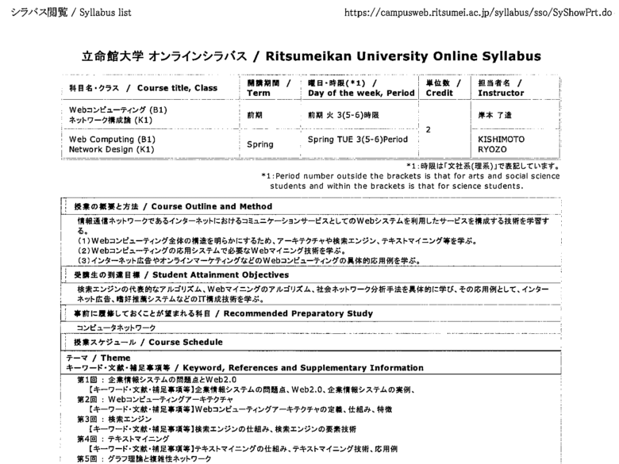
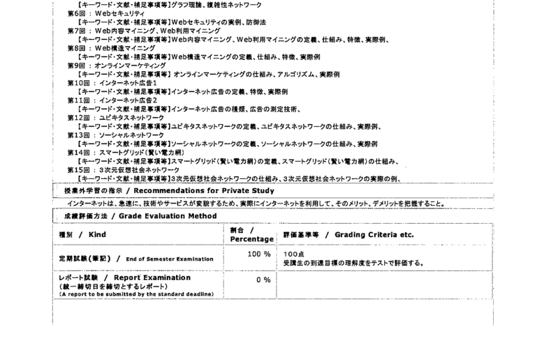
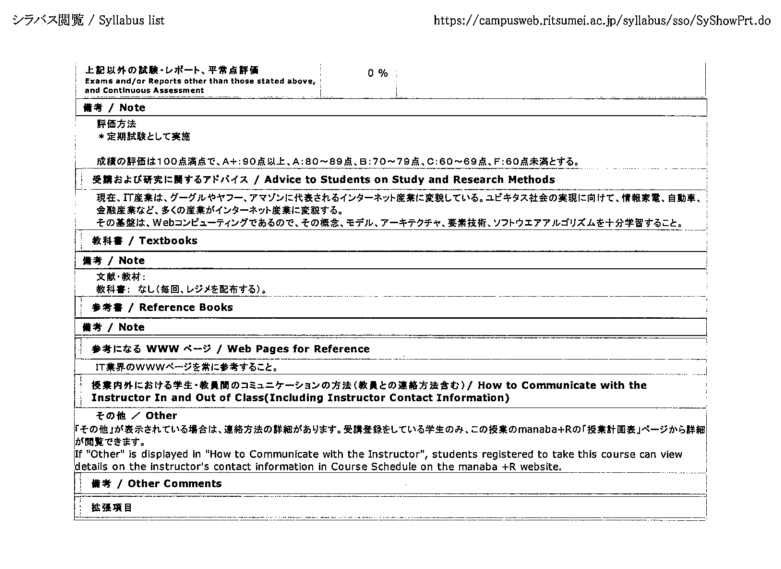

概要
教学大纲
通识与公共基础课程
通识类
职业发展（JP）
外语类
英语1
英语2
综合日语1
综合日语2
综合日语3
[综合日语4]
日语听说1
日语听说2
日语听说3
[日语听说4]
数学类
[微积分1]
[微积分2]
[线性代数与解析几何]
离散数学
[概率与统计B]
物理类
[大学物理（EN）]
大类与专业基础课程
大类平台课程
[信息导论]
编程基础C（EN）
[科学技术与伦理（EN）]
科技日语（JP）
[高级程序设计1（EN）]
模拟电路
[数字电路]
计算机组织与结构（JP）
数据结构与算法1（EN）
[数据结构与算法2（EN）]
专业基础课程
[操作系统（JP）]
数据库系统（JP）
软件工程（JP）
计算机网络（JP）
专业与专业方向课程
[软件界面与人机交互（JP）]
[计算机视觉（JP）]
分布式系统（JP）
[信号处理（JP）]
面向对象技术UML（JP）
Web计算（JP）
[机器学习（JP）]
计算智能（JP）
软件工程专业课程
信息安全（JP）
系统分析与设计
[设计模式]
[专业前沿特论1（JP/EN）]
人工智能（JP）
软件测试与质量保证
[高性能计算]
[专业前沿特论2（JP/EN）]
数字媒体技术专业课程
[计算机图形学]
[设计基础]
[可视化与可视化分析]
[专业前沿特论1（JP/EN）]
[语音处理（JP）]
[虚拟现实技术与游戏开发（JP）]
[游戏创意与设计]
[专业前沿特论2（JP/EN）]
专业实践课程
计算机系统组装与设置
[信息技术与实践（JP）]
[海外IT实习项目（JP）]
[高级编程实验]
[信息通信创新实验]
[智能信息处理实验]
[媒体信息处理实验]
高级程序设计2
专业前沿与综合演习
[信息与软件工程创新实验]
[毕业设计1（JP）]
[毕业设计2（JP/EN）]
[毕业设计3（JP/EN）]
Published with GitBook
Web计算（JP）



results matching "
"
No results matching "
"